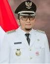

Hendri Septa, B.Bus.(Acc), M.I.B. (lahir di Padang, Sumatra Barat, 6 September 1976; umur 45 tahun) adalah politikus Indonesia.
Ia menjabat Wali Kota Padang sejak 7 April 2021.Ia pernah menjabat sebagai Wakil Wali Kota Padang periode 2019—20216
Ketua Dewan Perwakilan Daerah (DPD) Partai Amanat Nasional Kota Padang sejak 13 November 2016.
Potret Hendri Septa untuk Pemilihan umum Wali Kota Padang 2018
Hendri Septa lahir dan menghabiskan masa kecilnya di Kota Padang. Ia menamatkan pendidikan menengah di SMP Negeri 2 Padang
SMA Negeri 2 Padang.Setelah tamat SMA, Hendri melanjutkan pendidikan di Universitas Swinburne, Melbourne
setara Diploma III dengan gelar Advanced Diploma Business in Accounting
Hendri melanjutkan pendidikan ke Universitas Monash di Melbourne selama tiga tahun, kemudian pindah ke Universitas Central Queensland.
Di sini, Hendri menamatkan pendidikan setara Strata 1 dengan gelar Bachelor of Business (Accounting) atau disingkat BBus (Acc).
Setelah itu, untuk mematangkan lagi ilmunya di bidang bisnis, Hendri kuliah Strata 2 di Universitas Deakin,
hingga tamat dengan gelar Masters of International Business (MIB).
Karier legislatif
Setelah menamatkan pendidikan di Australia, ia dipanggil orang tuanya Muhammad Asli Chaidir untuk pulang kembali ke Indonesia.
Perjalanan karier politik Hendri dimulai melalui Partai Amanat Nasional yang juga tempat Asli Chaidir bernaung.
Hendri mencalonkan diri sebagai anggota DPRD Kota Padang pada Pemilu 2009. Ia sukses terpilih sebagai anggota
DPRD Kota Padang periode 2009–2014. Selepas itu, pada Pemilu 2014, Hendri kembali mencalonkan diri sebagai anggota DPRD Sumatra Barat.
Suara yang diperoleh Hendri tidak mencukupi untuk duduk di gedung perwakilan rakyat di Jalan Khatib Sulaiman itu.
Karier eksekutif
Pengundian nomor urut peserta Pilwako
Pada Pemilihan umum Wali Kota Padang 2018, Hendri Septa terpilih sebagai Wakil Wali Kota Padang untuk 2019—2024
Ia memulai masa jabatan pada 13 Mei 2019.
Kehidupan pribadi
Hendri Septa merupakan putra dari politisi Sumatra Barat, Muhammad Asli Chaidir. Ayahnya merupakan anggota DPR-RI periode
2014—2019 dan Wakil Ketua DPRD Sumatra Barat periode 2009—2014.Ia menikah dengan Genny Putrinda, putri dari Leonardy Harmainy,
anggota DPD-RI periode 2017–petahana dan Ketua DPRD Sumatra Barat periode 2004—2009. Ia dikarunai dua anak
bernama Muhammad Athar Raziq Inaaya Septa dan Muhammad Farrel Abhinaya Septa.